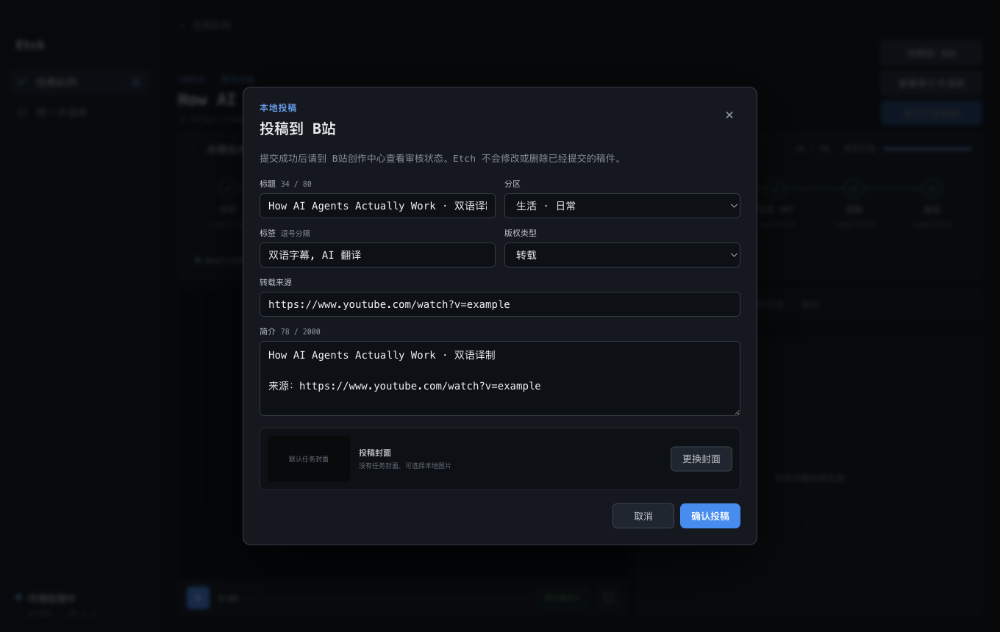

双语硬字幕
支持 YouTube、Vimeo 和 X / Twitter 的公开视频链接。取不到英文字幕时，使用 mlx_whisper 在本机转写。
- 按来源选择媒体与字幕获取方式
- 长字幕分批翻译，每批通过校验后保存
- 校对后生成双语 SRT，再压制并验证成片
交付bilingual.srt
final.mp4
Etch 是一个跑在你自己 Mac 上的桌面工作站。双语硬字幕、视频总结、网页翻译三类任务共用一条按阶段保存进度的流水线，中断之后从已确认的地方继续。
公开版 0.2.18 · Apple Silicon · macOS 13.5+ · 仅支持 HTTP(S) URL · 暂不支持本地文件导入 · Apple Development 签名，未经公证
这是原型，不是真实 App。阶段名、状态、并发池、评分维度与风格方向都取自 Etch 源码；正文是标注过的示例数据。
可点：任务类型、成果切换、完成校对、流水线折叠、任意阶段节点、工作台标签页、cue 行与翻页、HTML 风格方向与生成结果。键盘可用方向键在标签页与风格方向间移动。
同一套流水线在真实 Electron 工作台里的样子：十阶段状态、视频预览与逐句双语校对。

Etch 在创建任务时分流：视频走字幕或总结，网页走文档处理。三者共享恢复机制，但各自产出不同文件。
支持 YouTube、Vimeo 和 X / Twitter 的公开视频链接。取不到英文字幕时，使用 mlx_whisper 在本机转写。
交付bilingual.srt
final.mp4
从字幕生成素材包，核验可外查事实，再让 A / B / C 三个隔离会话分别成稿、评分与融合。
交付summary.md
images/（可选）
支持普通网页、单条 X 帖子和 X Article。可以只转 Markdown，也可以选择标准翻译或精校翻译。
交付translation.md
translation.html
任务状态、已提交产物和人工选择都写入本机任务记录。异常退出后，Etch 读取 task.json 和已验证文件继续执行。
下载、转写、字幕生成和压制都在 Mac 上完成；翻译数据是否离开设备取决于所选 Agent CLI。
字幕与长文翻译按批提交。后续失败或重启时，已通过本地校验的批次不会重做。
成本、字幕歧义、文档校对、外部核验受限和配图选择需要明确确认，不会静默越过。
字幕、总结和文档任务都能自定义分类；分类不会改变任务类型或流水线状态。
用有投稿权限的账号扫码连接后，可手动确认投稿信息，也可在新建字幕任务时开启自动投稿。

当前边界只支持单账号、单投稿并发；不支持定时、多账号、审核轮询或远端稿件管理。提交后请到 B站创作中心查看审核状态。
Etch 会逐项检查本机工具。网页只转 Markdown 不需要视频工具或 Agent；网页翻译、字幕翻译和视频总结需要至少一个已登录的 Agent CLI。
Apple Silicon Mac、macOS 13.5 或更高版本。首次打开需要在系统设置里允许运行。